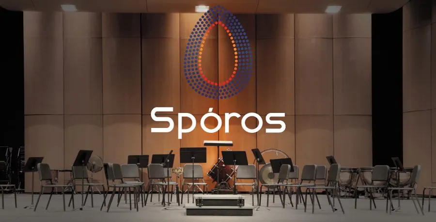

Germination
A space for new projects and collaborations to begin.

Instrumental project · VoxLaci
An instrumental project that is still germinating.
Why this name?
Spóros means seed, in Greek. Unlike animals, plants have no limit to how they seek favourable conditions for life: they disperse their seeds across land, water, even rock — and those seeds carry their own protection mechanism, preventing them from germinating too early, in unfavourable conditions like cold or snow. That image is where this VoxLaci instrumental project begins: a place where different instrumentalists — seeds — combine to form multiple forests, the music programmes that grow from their encounter. Spóros opens the VoxLaci community's language beyond voice, creating new possibilities for dialogue between singing and instruments, musicians of different generations, and future projects. We don't just want to present music. We want to create roots — and the conditions for something to grow after it.
Instrumentalists
VoxLaci's instrumental project in Cascais: opening the choral language to instrumentalists, new repertoire and voice-instrument collaborations.
Spóros is the VoxLaci community's instrumental project, created to open the choral language to instrumentalists, new repertoire and collaborations between voice and instrument. As across VoxLaci, being an amateur here carries the word's oldest sense: someone who loves what they do.
Why play here
A space for new projects and collaborations to begin.
Meeting point between choral repertoire and instrumental language.
Musicians of different ages and backgrounds, side by side.
Your voice starts here
Other paths